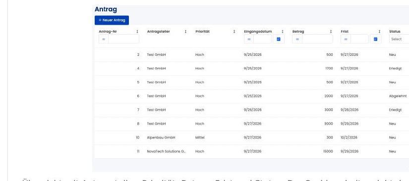
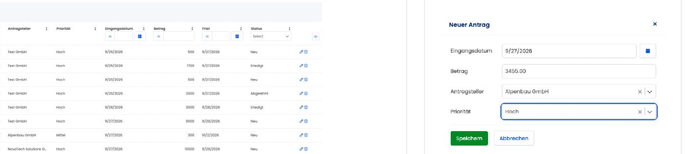
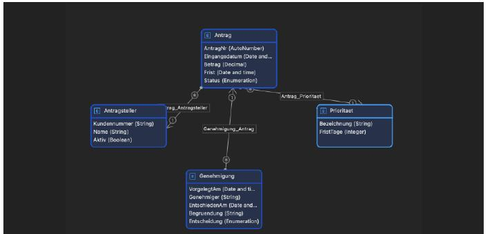
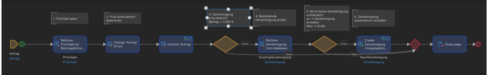
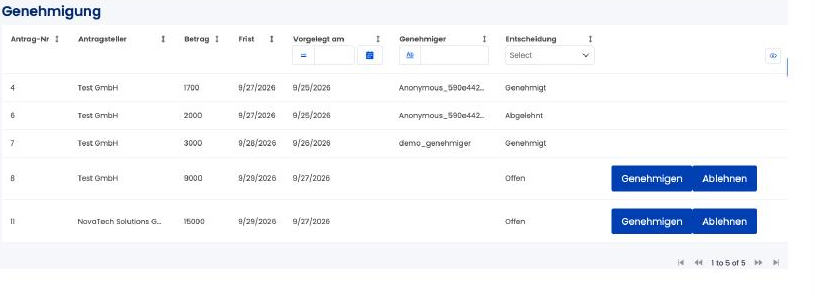

Overview
Requests inside a company are often handled by email, spreadsheet, or informal back-and-forth, which makes status, ownership, and approvals hard to track. This application digitizes a typical internal request-and-approval process in Mendix: clear ownership, an automatic business rule for when approval is required, and a status that always reflects where a request actually stands.
Mendix was named explicitly in the job description this was built for. The project shows how existing knowledge of business processes, data modeling, logic, and roles carries over to a new low-code platform.

Case worker overview: requester, priority, amount, deadline, and status at a glance.

New request: only the fields that actually need a person to enter them.
Process & data model
The process is submit request → check business rule → create approval → approve/reject → update status. Four entities carry it: Request, Requester, Priority, and Approval, connected by associations rather than copied data, so a requester or a priority is referenced, not duplicated onto every request.

Four entities, connected by associations: Antrag (request), Antragsteller (requester), Prioritaet (priority), Genehmigung (approval).
Core logic: ACT_Antrag_Save
On save, one microflow does five things in order: load the priority, calculate the deadline from it, check the amount against the approval threshold, check whether an approval already exists, and only create a new approval if one is actually needed.

The business rule (amount > €1,000 needs approval) and the duplicate-approval check both live in this one microflow, not scattered across the UI.
| Area | Rule |
|---|---|
| Business rule | Amount > €1,000 requires approval |
| Data quality | No duplicate approvals — checked before creating a new one |
| Roles | Case worker / Approver |
| UI/UX | Only the relevant actions are shown for each role |
Roles & views
Case workers and approvers see different pages with different actions, enforced through separate Mendix roles rather than one shared screen with conditionally hidden buttons. An approver can act on anything still open; a decided request is locked, and a confirmation step sits in front of every approve or reject.

Approver view: open items get Approve/Reject buttons, decided ones don't.
Testing
End-to-end tests cover the amount threshold, automatic approval creation, approve/reject, the status change that follows, and re-saving an already-decided request. One edge case surfaced during testing and was fixed before it shipped: saving a request multiple times could create more than one approval for it. The core-logic microflow now checks for an existing approval before creating a new one — the "ExistingGenehmigung" branch in the microflow screenshot above.
Limitations
This is a prototype, not a production deployment. Security is role-based demo security, not hardened for production use. There's no REST/API integration yet — the next production step would need data mapping, authentication, error handling, and logging. Testing is manual end-to-end cases, not automated tests.
What's next
REST/API integration, a configurable approval threshold instead of a fixed €1,000, multi-level approvals, a required reason when rejecting, a working-day-aware deadline calculation, audit logging, deeper security testing, automated tests, and an actual production deployment.